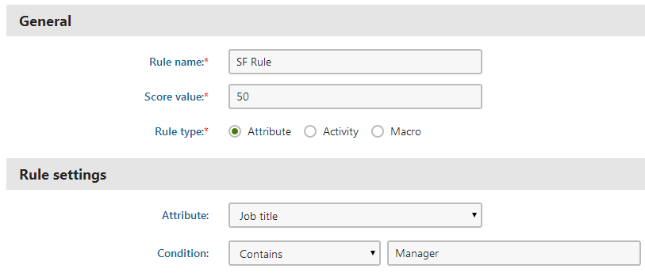
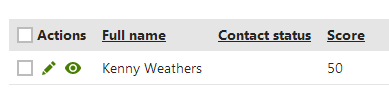
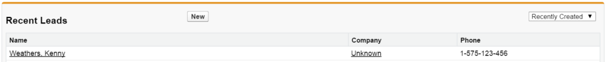

Example - Replicating a contact into a Salesforce lead
Feature retired in Kentico 11
Salesforce integration in Kentico 11 uses Salesforce SOAP API version 23.0, which is deprecated and will be retired in 2023. For more information, see the Salesforce Platform API Versions 21.0 through 30.0 Retirement article.
If you wish to use Salesforce integration, you need to upgrade to Kentico Xperience 13.
The following example demonstrates how the system replicates a sample contact into a Salesforce lead.
Important: The sites must be authorized for Salesforce access.
Creating the replication score
First you need to define a score to determine which contacts the system will replicate.
Open the Scoring application.
Click New score.
Type SF Score as the score's Display name and click Save.
Switch to the Rules tab of the new score and click New rule.
Set the following properties for the rule:
Rule name: SF Rule
Score value: 50
Rule type: Attribute
Attribute: Job title
Condition: Contains - Manager

Creating a new score ruleClick Save.
This SF Score grants 50 points to all contacts who have the word Manager in their job title.
Kentico EMS required
Features described on this page require the Kentico EMS license.
Creating a new contact
Now you need to create a contact that fulfills the rule of the previously defined score. On live deployments, the system automatically creates and maintains contacts for the website visitors, but you can add a contact manually to try out the Salesforce replication.
Open the Contact management application on the Contacts tab.
Click New contact and fill in the following attributes:
First name: Kenny
Last name: Weathers
Job title: OMF Manager
Address1: N 14th St
City: Cottonwood
Country: USA
State: Arizona
Business phone: 1-575-123-456
Email address: kenny@cottonwood.local
Click Save.
Go back to the Scoring application.
Edit (
 ) the SF score.
) the SF score.
On the Contacts tab, you can see that your new contact has 50 points in the replication score. The system awarded the points because the contact contains the word Manager in the Job title field.

Contact with assigned score of 50
Replicating the contact to Salesforce
You now need to configure the Salesforce replication settings.
Go to Settings -> Integration -> Salesforce.
Make sure that the field mapping settings match your requirements.
Specify the replication score requirements through the following settings:
Score: Select your replication score (SF Score)
Minimum number of points for replication: 50
Save the settings.
You now have a contact that fulfills the replication criteria. By default, the system replicates contacts once every hour. You can however run the replication manually at any time.
Starting the replication process manually
Open the Scheduled tasks application.
Select (global) in the Site selector.
Click Execute (
 ) next to the Salesforce replication task.
) next to the Salesforce replication task.
Result
After a couple of minutes at most, your contact should appear as a lead in Salesforce.
To check whether the replication was successful:
Log in to Salesforce using your account.
Navigate to the Leads tab.
Select Recently Created in the drop-down list of the Recent Leads section.
You should see the lead replicated from the Kentico contact. You can now work with the lead as with any other Salesforce lead.

Contact replicated from Kentico into Salesforce
You can also check the replication status of the contact in Kentico:
Open the Contact management application on the Contacts tab.
Click Advanced search.
Select Replicated into Salesforce leads in the second Search options.
Click Search.
The list now shows only contacts that have been successfully replicated to Salesforce.